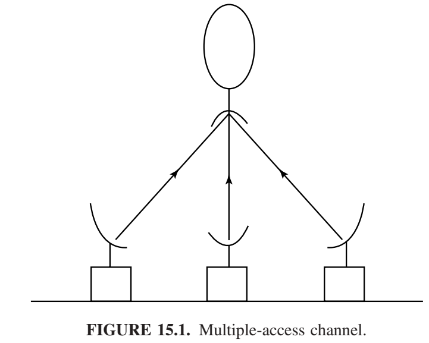
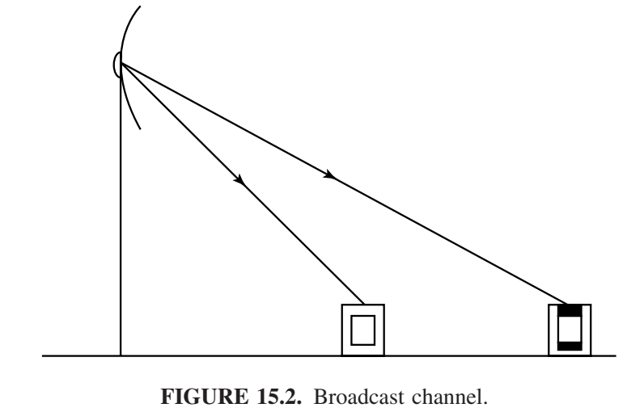

网络信息论
具有多个发送者和接收者的系统在通信问题中包含了许多新元素：干扰、合作和反馈。这些问题属于网络信息论的研究领域。其一般问题很容易表述。给定多个发送者和接收者，以及一个描述网络中干扰和噪声影响的信道转移矩阵，判断这些源是否可以通过该信道传输。这个问题涉及分布式源编码（数据压缩）以及分布式通信（寻找网络的容量区域）。由于这个一般问题尚未得到解决，因此本章将考虑各种特殊情况。
大型通信网络的例子包括计算机网络、卫星网络和电话系统。即使在一台计算机内部，也存在着相互通信的各种组件。一套完整的网络信息理论将对通信和计算机网络的设计产生广泛的影响。
假设m个站希望通过一个公共信道与一颗卫星通信，如图15.1所示。这被称为多址信道。各个发送方如何相互协作向接收方发送信息？可以同时实现的通信速率是多少？发送方之间的干扰对总通信速率有何限制？这是最容易理解的多用户信道，上述问题都有令人满意的答案。

相反，我们可以反转网络，考虑一个电视台向m个电视接收机发送信息，如图15.2所示。发送方如何将原本发送给不同接收方的信息编码到一个共同的信号中？信息可以以多少速率发送到不同的接收方？对于这种信道，只有在特殊情况下才能知道答案。

还有其他信道，例如中继信道（只有一个源和一个目的地，但有一对或多对中间发送器-接收器充当中继器，以促进源和目的地之间的通信）、干扰信道（两个发送器和两个接收器之间存在串扰）以及双向信道（两个发送器-接收器相互发送信息）。对于所有这些信道，我们对于可实现的通信速率和适当的编码策略的问题只得到了部分答案。